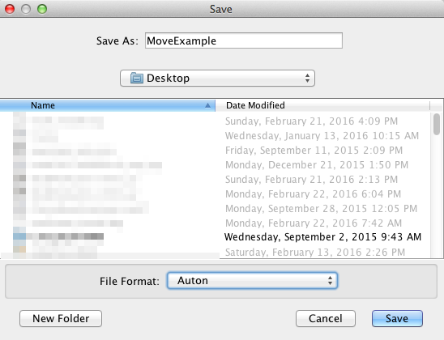

Build-an-Auton Tutorial
Welcome to the Build-an-Auton tutorial. In this tutorial, we'll go through how to create simple programs that the robot will execute.
Info
When you open Build-an-Auton, you'll see a timeline, along with several buttons for creating and deleting commands and threads.- The timeline will be used as a guideline as to when to execute commands.
- The commands will be used for making the robot do things like move, turn, etc.
- The threads will be used to run multiple commands at the same time.
Creating a Command
Firstly, you'll want to click the "Command" button next to "Add:". A window should pop up prompting you to choose a command to run. In this case, we'll choose the "MoveStraightCommand" which makes the robot move straight. Once you hit OK, you'll notice that three small, connected boxes will appear somewhere around the timeline. Clicking on the top box (the one with the name of the command) and moving your mouse will allow you to move the command boxes around. Clicking on the bottom left box (the one that says "Delete") will delete the command. Clicking on the bottom right box (the one that says "Edit") will open a window allowing you to edit the different properties that go along with the selected command.
Editing a Command
Go ahead and click on the "Edit" button. You will see a box with two fields, distance and speed, come up. For this tutorial, let's input "5.0" as distance, and "0.75" for speed (speed must be between -1 and 1). After clicking "Done", the window will disappear and the entered values will be saved.
Threading
Now click the "Thread" button next to "Add:". A window will pop up asking for a command to run with. Basically, this is asking if you want to start running this thread at the same time as a certain command. For this tutorial, we'll just type in "1" (the move command we made). You'll notice that a new timeline has been created. You'll also notice that if you move the move command around, the timeline will move with it. This is used for running multiple commands at the same time. Now, create a new "TurnCommand", the same way that you made the "MoveCommand" earlier. Drag the newly created turn command onto the second timeline.
Saving
Now, you'll want to click "File" on the bar at the top. A drop-down menu should come up. Select "save" from these options. Double click on "Desktop", and enter a name in the "Save As" field. In this tutorial, we'll name it "MoveExample". Click "Save". This has saved the entire program as a raw binary file on the desktop to be opened later.
Opening
To make sure that this worked, go to the "File" bar at the top, and select "Load". Under the "File Format" drop-down, select "All Files". Now, double click on "Desktop", select "MoveExample", and click "Open". You'll see that Build-an-Auton has reopened the program that you just saved.
Exporting
Now comes the (un)fun part: exporting the program to the robot.
I'll finish this tutorial once I figure out how the heck exporting works. -Ben
A dialog will appear asking for the name of your program (file extension is automatically added).
If you are connected to the RoboRIO when you press OK it will send over FTP. -Dan
Commands
Move Straight Command
The move straight command is used for moving straight forward and backward.
Move Along Curve Command
The move along curve command is used for moving around along a curve.
Move To Point Command
The move to point command is used for moving to a specific point on the field (assuming the robot is at [0,0]).
Turn Command
The turn command is used for turning to a certain angle.
Lights Command
The lights command is used for turning the attached light on and off.
Delay Command
The delay command is used for waiting a certain amount of time before executing the next command.
Move Feeder Arm Command
The turn command is used for moving the feeder arm to a certain angle.
Move Back Arm Command
The turn command is used for moving the back arm to a certain angle.
Shoot Command
The shoot command is used for shooting the ball.
Feeder Command
The feeder command is used for spinning the feeder.